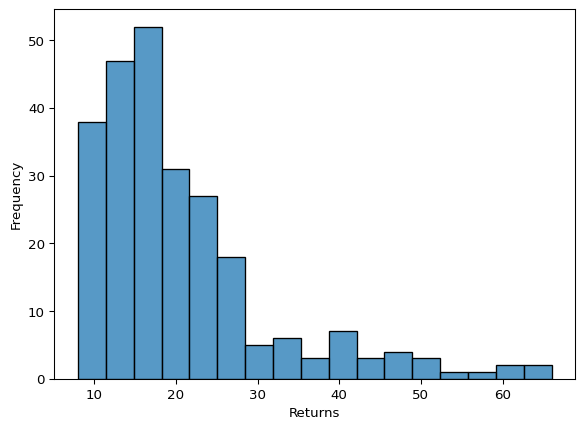
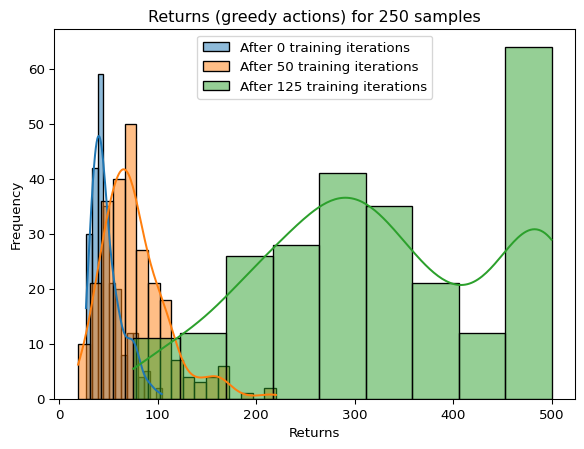
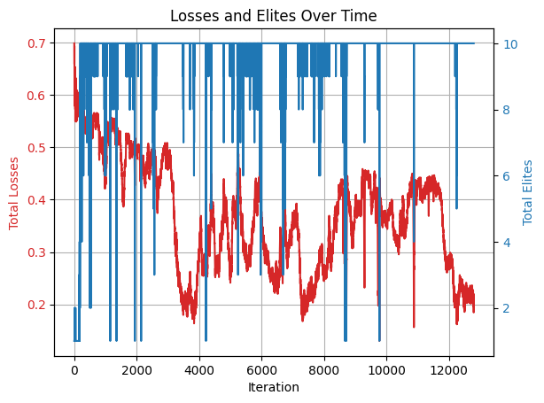
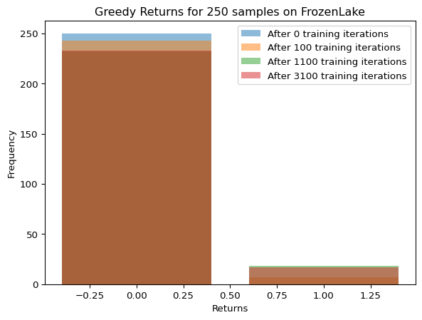
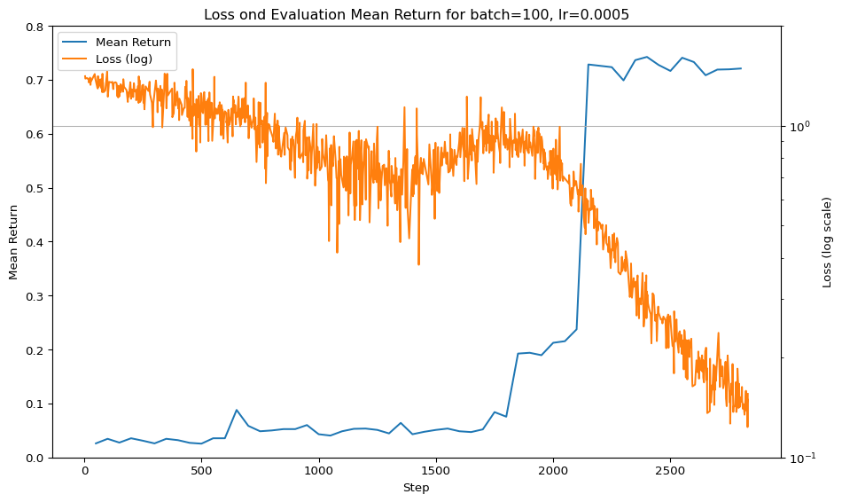
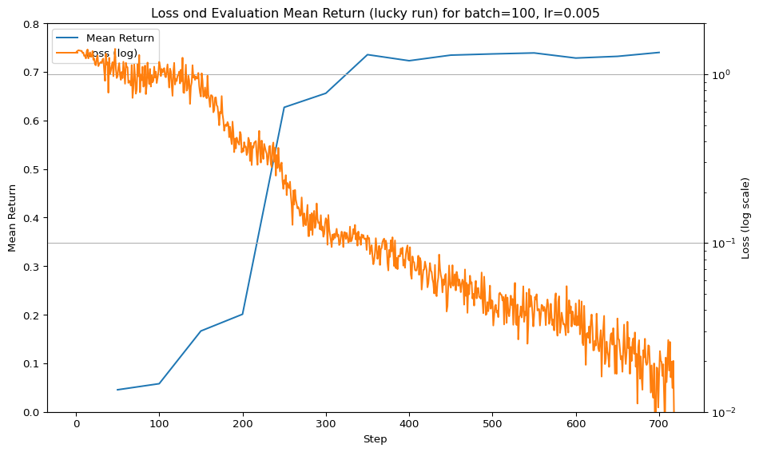
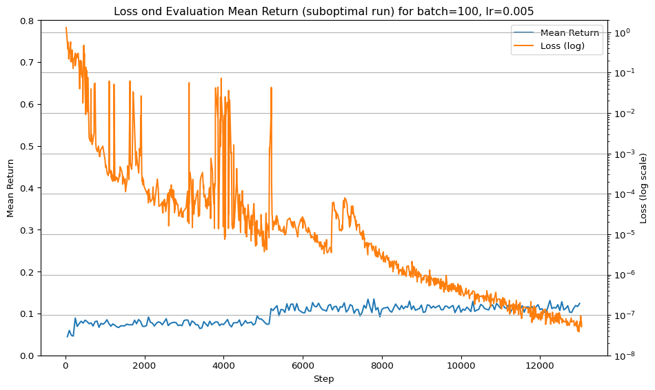

# === the CartPole environment ===
import gymnasium as gym
env = gym.make("CartPole-v1")4 The Cross-Entropy Method
In this chapter, we will explore the cross-entropy method. Although the name sounds sophisticated, the underlying idea is quite simple. The origin of the name is discussed in the appendix Section 4.14.2.
We will learn the method using the example of the CartPole environment.
Episodes in CartPole are truncated after 500 steps. We want to train an agent that can balance the pole for that long.
4.1 Policies
In CartPole, the state is represented by a 4-tuple of numbers.
# === states in CartPole ===
state,_ = env.reset()
statearray([ 0.02830805, 0.04183438, -0.02289853, 0.01228617], dtype=float32)We don’t really need to know in detail what those numbers mean; the idea is to let the agent figure out what to do.
The action space consists of two discrete choices: left or right.
# === actions of CartPole ===
env.action_spaceDiscrete(2)Discrete(2) means that it expects 0 or 1 as actions (and again, we don’t really need to know which is which; the agent has to figure out which one to use in which situation)..
We want to build an agent with a neural network that models some kind of ‘internal belief’ about which action is best to take in each state. More precisely, the agent should produce a probability distribution over actions, depending on the current state. This distribution is the agent’s policy, written as \[ \pi_\theta(a\mid s), \]
where \(s\) is the current state, \(a\) an action, and \(\theta\) the neural network’s parameters (like weights and biases).
Concretely, our agent’s neural network will output a policy vector for each state \(s\): \[ (\pi_\theta(a_1 \mid s), \pi_\theta(a_2 \mid s)) \]
where \(a_1\) and \(a_2\) are the two possible actions in CartPole.
To create a neural network that returns a probability distribution, we need the softmax function.
4.2 Softmax
Given an input vector \(\mathbf{x} \in \mathbb{R}^N\), the softmax function returns a probability vector \(\mathrm{softmax}(\mathbf{x})\) defined by \[ \mathrm{softmax}(\mathbf{x})_i = \frac{\exp(\mathbf{x}_i)}{\sum_{j=1}^N \exp(\mathbf{x}_j)}. \]
Softmax preserves the relative ordering of the components: if \(\mathbf{x}_i < \mathbf{x}_k\), then \(\mathrm{softmax}(\mathbf{x})_i < \mathrm{softmax}(\mathbf{x})_k\)
PyTorch provides a Softmax layer:
# === Softmax layer applied to a single vector ===
import torch.nn as nn
import torch
tensor = torch.tensor([1.0, 2.0, 3.0])
softmax = nn.Softmax()
softmax(tensor)/home/jx/projects/notes_for_deep_rl_hands_on/venv/lib/python3.12/site-packages/torch/nn/modules/module.py:1751: UserWarning: Implicit dimension choice for softmax has been deprecated. Change the call to include dim=X as an argument.
return self._call_impl(*args, **kwargs)tensor([0.0900, 0.2447, 0.6652])Running this works, but we also get a warning
Implicit dimension choice for softmax has been deprecated. Change the call to include dim=X as an argument
That’s because softmax operates along a specific axis, and PyTorch wants us to be explicit about it. As we will be working with batches (which we almost always do when training), the data we feed into softmax will be a rank-2 tensor: the 0-axis for the batch and the 1-axis for the outputs of the previous layer. So, we want to apply softmax along this output, dim=1:
# === Softmax layer applied to a batch ===
tensor = torch.tensor([[1.0, 2.0, 3.0], [4.0, 5.0, 6.0]])
softmax = nn.Softmax(dim=1)
softmax(tensor)tensor([[0.0900, 0.2447, 0.6652],
[0.0900, 0.2447, 0.6652]])Each row is transformed independently, yielding a probability distribution.
You might notice that both rows give the same probabilities, even though the inputs are different. Softmax is invariant to the addition of a constant to all input elements. This is because adding a constant to each element results in the same factor appearing in both the numerator and the denominator of the softmax formula, which cancels out.
4.3 Design of the Agent
Let us design the agent for CartPole, which we will train later. It has two functions: policy, for getting the agent’s policy as calculated by its network, and sample_action, to sample an action for a single state according to the policy vector. For example, if the policy returns \((0.6, 0.4)\), the agent will choose action 0 with probability 0.6 and action 1 with probability 0.4. This stochasticity is kind of a feature of the agent; it helps ensure that it keeps exploring different actions.
The network architecture is as follows:
- Input layer: 4 units (CartPole state).
- Hidden layer: 128 units with ReLU activation.
- Output layer: 2 units (one score per action), followed by softmax to yield a probability vector.
# === CartPole agent ===
from torch.distributions import Categorical
from numpy import ndarray
State = ndarray # a 4‑element NumPy array
Action = int # 0 or 1
class CartPoleAgent:
def __init__(self):
self.policy_network = nn.Sequential(
nn.Linear(4, 128),
nn.ReLU(),
nn.Linear(128, 2),
nn.Softmax(dim=1),
)
def policy(self, states: torch.Tensor) -> torch.Tensor:
"""
Given a batch of states (shape [batch_size, 4]),
return a tensor of shape [batch_size, 2] giving
probability distributions over the two actions.
"""
return self.policy_network(states)
def sample_action(self, state: State) -> Action:
"""
Sample an action according to the policy.
"""
# convert to tensor and add a batch axis
state_tensor = torch.tensor(state, dtype=torch.float)
batch = state_tensor.unsqueeze(0) # shape [1,4]
# compute action probabilities and remove batch axis
probs = self.policy(batch).squeeze(0) # shape [2]
# create a categorical distribution and sample
dist = Categorical(probs)
action = dist.sample()
return action.item()- 1
-
We can explicitly set the type of the elements in a tensor using
dtype. - 2
-
PyTorch’s
Categoricaldistribution provides functionality to sample from a probability vector like [0.3,0.7] to obtain an action index according to its probability.
4.4 Episodes and Return
CartPole is an episodic task, which means it has an end; either because the pole fell over or the time limit was reached.
Formally, an episode \(\tau\) is a sequence of states, actions and rewards: \[ \tau = s_0, a_0, r_0, s_1, a_1,r_1 \dots, s_T, a_T, r_T \]
essentially1 in the order of how they happen.
Let’s write some code to generate an episode by running an agent in the environment.
# === generating episodes ===
from dataclasses import dataclass
Reward = float
@dataclass(frozen=True)
class Episode:
states: list[State]
actions: list[Action]
rewards: list[Reward]
def generate_episode(env, agent) -> Episode:
states, actions, rewards = [], [], []
state, _ = env.reset()
states.append(state)
while True:
action = agent.sample_action(state)
actions.append(action)
state, reward, terminated, truncated, _ = env.step(action)
rewards.append(reward)
if terminated or truncated:
return Episode(states, actions, rewards)
states.append(state)- 1
-
Dataclasses are very similar to a dictionaries. I them here because I think they are more readable. The argument
frozen=Truemakes the dataclass immutable (though the lists themselves remain mutable). This helps with code clarity, conveying thatEpisodeis a plain data object. - 2
- Generally, I try to keep the code similar to the theoretical description. However, we split the states, actions, and rewards into three lists instead of one tuple \((s_0, a_0, r_0, \dots, s_T, a_T, r_T)\). Anything else would just be mad.
- 3
-
Initially, I didn’t like ‘
while True-loops’ when I started learning reinforcement learning. I was told they are poor practice. However, they do have an advantage: they allow us to write loops that are conditioned on variables that do not exist at the beginning of the loop, such asterminatedhere.
Now we can instantiate an agent and let it run:
# === run a single episode ===
agent = CartPoleAgent()
episode = generate_episode(env, agent)
print(f"The episode's states: {episode.states}")
print(f"The episode's actions: {episode.actions}")
print(f"The episode's rewards: {episode.rewards}")
print(f"Balanced pole for {len(episode.states)} steps")The episode's states: [array([-0.00352081, 0.02557276, 0.03008931, -0.03682047], dtype=float32), array([-0.00300935, 0.22025059, 0.0293529 , -0.3198601 ], dtype=float32), array([ 0.00139566, 0.02472317, 0.0229557 , -0.01806681], dtype=float32), array([ 0.00189012, 0.21950851, 0.02259437, -0.30341947], dtype=float32), array([ 0.00628029, 0.4143013 , 0.01652598, -0.58889186], dtype=float32), array([ 0.01456632, 0.21895188, 0.00474814, -0.29104933], dtype=float32), array([ 0.01894536, 0.41400582, -0.00107285, -0.582231 ], dtype=float32), array([ 0.02722547, 0.6091428 , -0.01271747, -0.8752517 ], dtype=float32), array([ 0.03940833, 0.80443525, -0.0302225 , -1.1719056 ], dtype=float32), array([ 0.05549704, 0.9999368 , -0.05366061, -1.4739081 ], dtype=float32), array([ 0.07549577, 0.8055102 , -0.08313878, -1.1984566 ], dtype=float32), array([ 0.09160598, 0.61155665, -0.10710791, -0.9329457 ], dtype=float32), array([ 0.10383711, 0.80794793, -0.12576683, -1.2572742 ], dtype=float32), array([ 0.11999607, 1.004435 , -0.1509123 , -1.5865549 ], dtype=float32), array([ 0.14008477, 0.81139463, -0.1826434 , -1.3444854 ], dtype=float32)]
The episode's actions: [1, 0, 1, 1, 0, 1, 1, 1, 1, 0, 0, 1, 1, 0, 0]
The episode's rewards: [1.0, 1.0, 1.0, 1.0, 1.0, 1.0, 1.0, 1.0, 1.0, 1.0, 1.0, 1.0, 1.0, 1.0, 1.0]
Balanced pole for 15 stepsWhen we create a new agent like above, a neural network with random (but sensible) weights is generated. Thus, the agent’s policy is more or less uniform: \[ \pi(a\mid s)\approx \frac{1}{2} \quad \text{for }a \in \{0,1\} \]
For training we need to evaluate the agents performance on an episode.
For this particular problem, performance is easy to calculate; it is simply \(T+1\), the number of time steps the pole was balanced. More generally, in reinforcement learning, we use the rewards received after each action to measure performance. We define the return of an episode \(\tau\) as: \[ R(\tau) = r_0 + r_1 + \dots + r_T, \]
This form can be used for all kinds of reinforcement learning problems. Since in our case, the reward for each action is just 1.0, the return is just number of steps, \(R(\tau)=T+1\). Here is a function that calculates the return:
# === calculating return ==
import numpy as np
Return = float
def calculate_return(episode) -> Return:
return float(np.sum(episode.rewards))
print(f"Length: {len(episode.states)}")
print(f"Return: {calculate_return(episode)}")Length: 15
Return: 15.0The return is stochastic, even if the environment is deterministic (CartPole is deterministic up to the starting state), because our agent itself is stochastic as it samples actions from its policy distribution. For example, seeding the environment so that the initial states are the same…
# === return is stochastic ===
deterministic_env = gym.make("CartPole-v1")
deterministic_env.reset(seed=0)
episode1 = generate_episode(deterministic_env, agent)
deterministic_env.reset(seed=0)
episode2 = generate_episode(deterministic_env, agent)
print(episode1.states)
print(episode2.states)
print(episode1.actions)
print(episode2.actions)[array([0.03132702, 0.04127556, 0.01066358, 0.02294966], dtype=float32), array([ 0.03215253, -0.15399769, 0.01112257, 0.3189779 ], dtype=float32), array([ 0.02907258, -0.34927627, 0.01750213, 0.6151476 ], dtype=float32), array([ 0.02208706, -0.54463834, 0.02980508, 0.9132912 ], dtype=float32), array([ 0.01119429, -0.7401505 , 0.0480709 , 1.2151906 ], dtype=float32), array([-0.00360872, -0.5456805 , 0.07237472, 0.93795 ], dtype=float32), array([-0.01452233, -0.74169976, 0.09113372, 1.2524687 ], dtype=float32), array([-0.02935633, -0.5478558 , 0.11618309, 0.9896656 ], dtype=float32), array([-0.04031344, -0.74432504, 0.1359764 , 1.3164638 ], dtype=float32), array([-0.05519994, -0.9408797 , 0.16230568, 1.6484282 ], dtype=float32), array([-0.07401754, -0.74798495, 0.19527425, 1.4103975 ], dtype=float32)]
[array([0.03132702, 0.04127556, 0.01066358, 0.02294966], dtype=float32), array([ 0.03215253, -0.15399769, 0.01112257, 0.3189779 ], dtype=float32), array([ 0.02907258, -0.34927627, 0.01750213, 0.6151476 ], dtype=float32), array([ 0.02208706, -0.15440318, 0.02980508, 0.3280281 ], dtype=float32), array([0.01899899, 0.04028206, 0.03636564, 0.04489136], dtype=float32), array([ 0.01980463, -0.15534198, 0.03726347, 0.34882256], dtype=float32), array([ 0.01669779, -0.35097355, 0.04423992, 0.65301913], dtype=float32), array([ 0.00967832, -0.15649468, 0.0573003 , 0.37458852], dtype=float32), array([0.00654843, 0.03776852, 0.06479207, 0.10050905], dtype=float32), array([ 0.0073038 , -0.1582193 , 0.06680226, 0.41290945], dtype=float32), array([ 0.00413941, -0.35422143, 0.07506044, 0.7258822 ], dtype=float32), array([-0.00294501, -0.5502966 , 0.08957808, 1.0412139 ], dtype=float32), array([-0.01395095, -0.74648684, 0.11040237, 1.36062 ], dtype=float32), array([-0.02888068, -0.55290836, 0.13761477, 1.1044124 ], dtype=float32), array([-0.03993885, -0.74954504, 0.15970302, 1.4369103 ], dtype=float32), array([-0.05492975, -0.94623435, 0.18844122, 1.7749431 ], dtype=float32)]
[0, 0, 0, 0, 1, 0, 1, 0, 0, 1, 0]
[0, 0, 1, 1, 0, 0, 1, 1, 0, 0, 0, 0, 1, 0, 0, 1]…shows that, although the initial states are identical, the agent’s random action sampling produces different episodes.
4.5 Distribution on Trajectories
The agent’s intrinsic randomness can be beneficial; even an untrained policy will occasionally stumble upon sequences of good actions. We can visualise this by sampling many episodes and plotting the empirical distribution of returns:
# === empirical distribution of untrained agent ===
import seaborn as sns
import matplotlib.pyplot as plt
def benchmark_agent(env, agent, num_samples=250):
returns = []
for _ in range(num_samples):
episode = generate_episode(env, agent)
returns.append(calculate_return(episode))
return returns
returns = benchmark_agent(env, agent)
ax = sns.histplot(returns)
ax.set_xlabel("Returns")
ax.set_ylabel("Frequency")
plt.show()
We see a tail of higher returns corresponding to episodes in which the agent did a better job of balancing.
As the number of samples grows, the empirical distribution approaches the true trajectory distribution (trajectory is a more general term than episode, but here they mean the same): \[ p_\theta(\tau) := \mathrm{Pr}_{\mathrm{Env}, \pi_\theta}(\tau) \]
which assigns each possible trajectory \(\tau\) the probability that the environment \(\mathrm{Env}\), under policy \(\pi_\theta\), will generate it. Thus, with sufficient sampling, the upper tail of our sampled returns reflects the best behaviour of our agent.
4.6 Basic Idea Behind Cross-Entropy Method
The idea behind the training procedure for the cross-entropy method is to use the tail of the trajectory distribution for training:
- sample a batch of episodes to obtain an approximation of \(p_\theta(\tau)\)
- Select the elite episodes, those whose returns is at least as good as the top fraction q of the sample. That is, we select episodes whose returns are at or above the q-quantile2 of the return distribution.
- perform stochastic gradient descent using a suitable loss function (which we still need to discuss) to update \(\theta \to \theta'\), so that the new policy \(\pi_{\theta'}(a \mid s)\) assigns higher probability to the state-action pairs that occurred in the elite episodes.
We now implement a function for the first two steps: generate & pick out those elite episodes.
# === sampling elite episodes ==
def sample_elite_episodes(
env,
agent,
num_episodes: int,
quantile_threshold: float,
) -> tuple[list[State], list[Action]]:
"""
- Generate num_episodes episodes
- return 'elite' episodes
(elite: return at or above the quantile_threshold)
"""
episodes = []
returns = []
for _ in range(num_episodes):
ep = generate_episode(env, agent)
episodes.append(ep)
returns.append(calculate_return(ep))
cutoff_return = np.quantile(returns, quantile_threshold)
elite_episodes = []
for ep, ret in zip(episodes, returns):
if ret >= cutoff_return:
elite_episodes.append(ep)
return elite_episodes- 1
-
The
zipfunction produces the pointwise pairs of two lists. So, this loop goes through episodes and their respective returns.
The last remaining point is to figure out how to do the gradient descent. We can think of this as a classification problem: instead of classifying images to labels, here we want to classify states to actions.
4.7 Classification
Classification is a branch of supervised learning, sometimes memetically referred to as “glorified curve fitting”.
We are given a dataset of N examples \((\mathbf{x}_n, y_n)_{n=1}^N\). Each input vector \(\mathbf{x}_n \in \mathbb{R}^d\) consists of \(d\) features, and each label \(y_n \in \{1, \dots ,K\}\) indicates the class index.
Our goal is to learn a parametrised probabilistic model \[ f_\theta(y \mid \mathbf{x}) \]
which, given a new feature vector \(\mathbf{x}\), outputs a probability distribution over the \(K\) possible classes.
So in our case the inputs \(\mathbf{x}\) correspond to the states \(s\), the labels \(y\) to actions \(a\), and the conditional distribution \(f_\theta(y \mid \mathbf{x})\) is the policy \(\pi_\theta(a \mid s)\) that we want to improve.
To get an idea of classification more generally, let’s look at the classic Iris dataset, which contains measurements of three Iris species: Setosa, Versicolor, and Virginica. Each sample has four numerical features (sepal3 length, sepal width, petal length, petal width) and one of three target classes corresponding to the different species. Check out wikipedia if you’re curious what irises are.
Here is some code for loading and displaying the dataset. There are no explanations for this code, as it isn’t central to the cross-entropy method. Also, for later code snippets in this section, I’ll only explain the parts relevant to this method.
# === load the iris data set ===
from sklearn import datasets
import pandas as pd
iris_df = pd.concat(datasets.load_iris(return_X_y=True, as_frame=True), axis=1)
iris_df| sepal length (cm) | sepal width (cm) | petal length (cm) | petal width (cm) | target | |
|---|---|---|---|---|---|
| 0 | 5.1 | 3.5 | 1.4 | 0.2 | 0 |
| 1 | 4.9 | 3.0 | 1.4 | 0.2 | 0 |
| 2 | 4.7 | 3.2 | 1.3 | 0.2 | 0 |
| 3 | 4.6 | 3.1 | 1.5 | 0.2 | 0 |
| 4 | 5.0 | 3.6 | 1.4 | 0.2 | 0 |
| ... | ... | ... | ... | ... | ... |
| 145 | 6.7 | 3.0 | 5.2 | 2.3 | 2 |
| 146 | 6.3 | 2.5 | 5.0 | 1.9 | 2 |
| 147 | 6.5 | 3.0 | 5.2 | 2.0 | 2 |
| 148 | 6.2 | 3.4 | 5.4 | 2.3 | 2 |
| 149 | 5.9 | 3.0 | 5.1 | 1.8 | 2 |
150 rows × 5 columns
The dataset contains 150 entries and 5 columns. The first four columns are the features (sepal/petal × length/width), and the last column target contains the class labels: 0 for Setosa, 1 for Versicolor, and 2 for Virginica.
For training we need to split the date into a feature matrix X and label vector y. By convention, we use uppercase for the \(N \times d\) feature matrix.
# === split dataset into features and labels ===
feature_columns = [
"sepal length (cm)",
"sepal width (cm)",
"petal length (cm)",
"petal width (cm)",
]
X = torch.tensor(
iris_df[feature_columns].values,
dtype=torch.float32,
)
y = torch.tensor(iris_df["target"].values, dtype=torch.long)With that, we’re ready to set up a small neural network model for \(f_\theta(y \mid \mathbf{x})\), which will classify the target labels. The model takes 4 inputs (one per feature) and outputs a probability vector over 3 classes:
# === the iris-classifier model ===
net = nn.Sequential(
nn.Linear(4, 125),
nn.ReLU(),
nn.Linear(125, 3),
nn.Softmax(dim=1),
)Untrained, its accuracy is roughly \(\frac{1}{3}\), i.e., it gets about a third of the classifications right.
# === accuracy of the untrained model ===
def check_accuracy(net, X, y):
with torch.no_grad():
preds = torch.argmax(net(X), dim=1)
accuracy = (preds == y).float().mean().item()
return accuracy
accuracy = check_accuracy(net, X, y)
print(f"Accuracy: {accuracy*100:.2f}%")- 1
- this disables PyTorch’s automatic gradient tracking and makes calculations faster (I suppose). The ‘with’ syntax automatically turns it back on after the with-block.
Accuracy: 33.33%We optimise the network parameters using simple full-batch gradient descent (as opposed to stochastic gradient descent, which would use mini-batches). Each training epoch consists of four steps:
- forward pass: get the predictions of the model
- compute mean loss: compute the mean loss \(L\) according to \[ \ell(f_\theta(\cdot \mid \mathbf{x}_i), y_i) = - \ln f_\theta(y_i \mid \mathbf{x}_i), \] which is called negative log likelihood (NLL). See Section 4.14.1 in the appendix for a discussion of why this loss makes sense.
- backward pass: compute gradients of the loss with respect to \(\theta\)
- parameter update: update parameters via gradient descent with learning rate \(\eta\): \(\theta \gets \theta - \eta \nabla_\theta L(\theta)\).
Let’s train the model for a fixed number of epochs and then re-check the accuracy:
# === train the iris-classifier ===
n_epochs = 10
learning_rate = 0.1
for epoch in range(n_epochs):
# 1. forward pass
probs = net(X) # batch of the probability vectors
# 2. compute mean loss
true_probs = probs[
torch.arange(probs.size(0)), y
] # probabilities for true classes
loss = -torch.log(true_probs).mean()
# 3. backward pass
loss.backward()
# 4. parameter update
with torch.no_grad():
for param in net.parameters():
param.data -= learning_rate * param.grad
# zero gradients
net.zero_grad()
accuracy = check_accuracy(net, X, y)
print(f"Accuracy after training: {accuracy*100:.2f}%")- 1
-
This is a technical step required by PyTorch. After calling
backward(), the gradients are stored and will accumulate. Therefore, we need to reset them before the next update.
Accuracy after training: 86.67%We see that training has worked: the network’s accuracy improves compared to its untrained baseline.
Note that in the code we have to actively zero the gradients. I think it’s actually safer to zero them at the beginning of the gradient descent step – just to rule out any strange bugs. So, that’s what we are going to do from now on.
That’s neural classification in a nutshell. Of course, there’s much more to real-world classification, such as how to detect and mitigate overfitting or underfitting. But in our setting, this is less of a concern; the environment always lets us generate fresh data, and it provides objective feedback on performance.
4.8 Optimizers
Now that we have the basic algorithmic structure for the cross-entropy method:
- Sample episodes & filter for elite ones
- do ‘classification’ on this data:
- forward pass
- calculate loss
- backward pass
- parameter update, according to learning rate \(\eta\)
let’s talk about the parameter update step.
Keeping a constant learning rate and manually updating parameters is a bit simplistic. There are many possible improvements, and much I don’t know. So, it’s best to use a good optimizer that handles gradient stepping for us. We will use Adam. You can check out Adam in the wikipedia article about stochastic gradient descent.
So, we get rid of this:
with torch.no_grad():
for param in net.parameters():
param.data -= learning_rate * param.gradand use Adam instead:
optimizer = optim.Adam(
params=agent.policy_network.parameters(),
lr=LEARNING_RATE,
)
# main learning loop
# zero the gradient before learning
optimizer.zero_grad()
# 1. forward ...
# 2. compute loss ...
# 3. backward pass ...
# 4. update parameters using Adam
optimizer.step()It would also make sense to use a prebuild loss function for the negative log likelihood, but there is some interaction between softmax and NLL that we have to discuss first. We do this below in Section 4.11. But before that, let’s finally finish implementing the cross-entropy method.
4.9 Implementation of Cross-Entropy Method
We now have all the ingredients necessary to implement the cross-entropy method.
First, we encapsulate all tuneable hyperparameters in a simple dataclass:
# === hyperparameters for cross-entropy method ===
@dataclass(frozen=True)
class TrainingParameters:
iterations: int = 20
batch_size: int = 10
quantile_threshold: float = 0.9
learning_rate: float = 0.005And here’s the cross-entropy method itself:
# === implementation of cross-entropy method ===
import torch.optim as optim
def cross_entropy_method(
env,
agent,
config: TrainingParameters,
):
# set up optimizer
optimizer = optim.Adam(
params=agent.policy_network.parameters(),
lr=config.learning_rate,
)
# key metrics
loss_series = []
num_elite_episodes = []
# cross-entrpy method main loop
for i in range(config.iterations):
# zero gradient
optimizer.zero_grad()
# 1. sample a batch of episodes and select elite ones
episodes = sample_elite_episodes(
env,
agent,
config.batch_size,
config.quantile_threshold,
)
# 2. perform 'classification'
# split and flatten episodes into input and label datasets
states = [state for ep in episodes for state in ep.states]
actions = [action for ep in episodes for action in ep.actions]
states_np = np.array(states)
actions_np = np.array(actions)
states_tensor = torch.tensor(states_np, dtype=torch.float)
actions_tensor = torch.tensor(actions_np, dtype=torch.long)
# 2.1 forward pass
action_probs = agent.policy(states_tensor)
# 2.2 compute negative log-likelihood
elite_action_probs = action_probs[
torch.arange(len(actions)),
actions_tensor,
]
loss = -torch.log(elite_action_probs).mean()
# 2.3 backward pass
loss.backward()
# 2.4 parameter update
optimizer.step()
# record statistics
loss_series.append(loss.item())
num_elite_episodes.append(len(episodes))
return loss_series, num_elite_episodes- 1
- It’s generally a good idea to log metrics during training so you can monitor progress. Ideally, you’d report them live (e.g. via TensorBoard), rather than just returning them at the end like I’ve done here.
- 2
- A pythonic way to flatten the list of episodes into a single list of states and actions using list comprehensions. These are essentially nested loops over the episodes and their respective states or actions.
- 3
- Converting to NumPy first speeds up the conversion to tensors. If you pass PyTorch a raw list directly, it complains that the internal conversion is slow.
After training, we want to benchmark the agent. For that, exploration is no longer necessary, so we switch to greedy action selection. For each state \(s\), we select the action \[ \arg \max_a \pi_\theta(a \mid s). \]
The following code trains a CartPole agent and benchmarks it. The code is somewhat messy and contains no new relevant bits, so you don’t need to focus on it – rather, look at the promising results:
Code
import matplotlib.pyplot as plt
import seaborn as sns
def generate_greedy_episode(env, agent) -> Episode:
states, actions, rewards = [], [], []
state, _ = env.reset()
states.append(state)
while True:
state_tensor = torch.tensor(state, dtype=torch.float32)
batch = state_tensor.unsqueeze(0)
probs = agent.policy(batch).squeeze(0)
action = int(torch.argmax(probs))
state, reward, terminated, truncated, _ = env.step(action)
actions.append(action)
rewards.append(reward)
if terminated or truncated:
return Episode(states, actions, rewards)
states.append(state)
def benchmark_greedy_agent(env, agent, num_samples=250):
returns = []
for _ in range(num_samples):
episode = generate_greedy_episode(env, agent)
returns.append(calculate_return(episode))
return returns
def run_experiments(env, agent, iterations, num_samples=50):
returns = []
total_losses, total_elites = [], []
running_total = 0
# initial benchmark before any training
returns.append((running_total, benchmark_greedy_agent(env, agent, num_samples)))
for it in iterations:
losses, elites = cross_entropy_method(
env, agent, TrainingParameters(iterations=it)
)
total_losses.extend(losses)
total_elites.extend(elites)
running_total += it
returns.append((running_total, benchmark_agent(env, agent, num_samples)))
return returns, total_losses, total_elites
agent = CartPoleAgent()
iterations = [50, 75]
num_samples = 250
returns, total_losses, total_elites = run_experiments(
env, agent, iterations, num_samples=num_samples
)
for total, ret in returns:
sns.histplot(ret, label=f"After {total} training iterations", alpha=0.5, kde=True)
plt.xlabel("Returns")
plt.ylabel("Frequency")
plt.title(f"Returns (greedy actions) for {num_samples} samples")
plt.legend()
plt.show()
The histograms of the returns gradually shift rightward, eventually piling up at the environment’s maximum return. You can train your own CartPole agent using the standalone code code/chapter_04/01_cartpole.py, but more on that later. Using this code, I found that the agent reaches optimal performance (reward = 500 for 250 episodes) after around 150 iterations, but sometimes it also takes considerably longer.
Earlier, when motivating the cross-entropy method, I said we should take a sufficiently large sample to estimate the trajectory distribution \(p_\theta\) in order to find elite episodes. Here, we used a batch size of just 10 episodes. Apparently, small batch sizes can work too; they lead to noisier updates but more frequent ones. I’m actually a big believer in ‘more learning, less sampling’.
That said, I’m not entirely sure under which conditions this procedure works reliably. We’ll later look at its limitations in Section 4.13. One key issue, I suspect, is that the method does not scale well when the reward signal is sparse.
4.10 Key Metrics
During training, we usually want to monitor diagnostic metrics to spot any problems. Loss is usually one of them – although in reinforcement learning it isn’t always that informative. Another useful metric in our case is the number of elite episodes per batch.
Here’s a plot of the loss and elite count over 12,800 iterations of training (parameters as before: batch size 10, threshold 0.9). I ran this separately, as it took a few hours.

Let’s try to explain the behaviour of both graphs a bit.
- The loss starts off at around 0.7 because, at the beginning, the agent assigns each action a probability of roughly 0.5, which results in a negative log-likelihood loss of \(−\ln(0.5)=0.69\).
- It’s hard to see here, but for the first ~100 episodes there’s usually only one elite episode. That’s because the return distribution has a long tail at this stage.
- Later, as the agent improves, all episodes often achieve the same (maximal) return, so they all count as elite, and the elite count is 10. At this point, the agent is not learning any new behaviour any more. It’s just reinforcing its current behaviour.
- Occasionally, the elite count drops again. I’m not sure why. Perhaps the agent unlearns good behaviour, or maybe it’s just due to the exploratory behaviour from softmax sampling.
- Generally, the loss decreases. Interpreted as classification, this means the agent is getting better at predicting which actions were taken in elite episodes. From an RL perspective, it means it’s favouring actions that tend to lead to good returns.
- That said, the learning trajectory is a bit bumpy. That’s due to the small batch size. This results in a sort of random walk in the loss (though I’m not entirely sure why).
4.11 Softmax and NLL
We designed our network so that it produces probabilites via the final softmax-layer: \[ \mathrm{Softmax}(\mathbf{x})_i = \frac{\exp(\mathbf{x}_i)}{\sum_j \exp(\mathbf{x}_j)}. \]
Often it is beneficial to work with the pure \(\mathbf{x}_i\) comming from the penultimate layer. These are called ‘logits’.
For our loss function, we have to compute the negative logarithm of the softmax. The composition is called log-softmax: \[ \mathrm{LogSoftmax}(\mathbf{x})_i := \ln(\mathrm{Softmax}(\mathbf{x})_i) = \mathbf{x}_i - \ln(\sum_j \exp(\mathbf{x}_j)) \]
The implementation of this in PyTorch is ‘numerical stable’ – I have never actually seen it. That just means we should use this instead of doing our own thing, which is more likely to run into overflows/underflows.
To benefit from that, we have to change our network architecture to return pure logits, and in the training loop, we don’t calculate the negative log likelihood by hand any more but use the CrossEntropyLoss as the loss function, which computes \(-\mathrm{LogSoftmax}(\mathbf{x})\) for us. So it will look like this:
loss_fn = nn.CrossEntropyLoss()
# main learning loop
# zero gradients ...
# forward ...
# loss
loss_v = loss_fn(action_probs, actions_tensor)
# backward ...
# step ...Using this architecture, we also have to keep in mind that whenever we are sampling actions from the network, we have to use the softmax to turn the logits into probabilities.
These changes are part of the final standalone implementation.
4.12 The Final Implementation
You can find the final implementation under code/chapter_04/01_cartpole.py. It is based on the code from Lapan (2024) but looks quite different at this point as it is more similar to the codebase that we have developed in these notes so far.
Here are some key points:
- there is no distinction between agent and network any more. Basically the agent is the policy and the policy is the network.
- we log some key metrics
loss,mean_return, thereturn_cutoff(where to cut of the ‘elite’ episodes) during training, andfraction_elites, which is the fraction of the sample that are elites - we stop training when the evaluation (using greedy action selection) shows that the agent can keep the pole balanced for the full 500 steps for 250 episodes in a row.
4.13 Limitations of Cross-Entropy Method
As I mentioned earlier, it’s not clear to me when the cross-entropy method can be used effectively. However, the FrozenLake environment is a good example of where it struggles.
4.13.1 The FrozenLake Environment
If you want an intuitive overview of the FrozenLake task, check out the the description in the official FrozenLake docs. Here, I’ll just explain what we need to know for training.
Let’s set up the environment:
# === create the FrozenLake environment ===
env = gym.make("FrozenLake-v1")Both the state (observation) space and the action space in FrozenLake are discrete:
# === observations and action spaces of FrozenLake ===
print("observation space: ", env.observation_space)
print("action space: ", env.action_space)observation space: Discrete(16)
action space: Discrete(4)To train a neural network on this environment, we’ll need to encode these observations in a suitable format. It’s not a good idea to feed states like 5, 9, or 12 directly into a neural network. They represent positions on a grid and should be treated as categorical values, not numeric ones.
To understand how to encode them, we first need to better understand how Gymnasium uses spaces to represent observations and actions.
4.13.2 Spaces
Gymnasium represents observations and actions via spaces. For us important for now are:
Discrete(n): an integer in \([0, n-1]\)Box(low, high, shape, dtype): a continuous space where each element is a real number with a lower and upper bound.lowandhighare arrays (of the sameshape) that define these bounds component-wise.
For example, in FrozenLake, observations and actions are represented by discrete spaces:
- observation space –
Discrete(16): The agent’s position on the 4×4 grid is encoded as an integer from 0 to 15. - action space –
Discrete(4): Four possible moves: left, down, right, up.
For CartPole, we had both discrete and continuous (Box) spaces:
- observation space –
Box([-4.8 -inf -0.41887903 -inf], [4.8 inf 0.41887903 inf], (4,), float32): The cart poles measurements:- Cart position
(-4.8, 4.8) - Cart velocity
(-inf, inf) - Pole angle
(-0.42, 0.42) - Pole angular velocity
(-inf, inf)
- Cart position
- action space –
Discrete(4): Two possible moves: left, right
In CartPole, the observation is already a continuous vector and can be fed directly into a neural network. But in FrozenLake, the state is just a single integer (0 to 15), and each value represents a distinct grid cell. These values are categorical, so they are typically encoded as one-hot vectors before being passed to a neural network.
4.13.3 One-Hot Encoding and Wrappers
When observations are discrete labels, it is common to use one-hot encoding: converting a label \(i\) from a set of size \(k\) into a \(k\)-dimensional vector with a 1 in position \(i\) and 0s elsewhere. (Check out the wikipedia page on one-hot encoding for more background)
Gymnasium’s wrappers let us transform environments by intercepting and modifying what goes in or out of them (observations, actions, rewards, etc.). In this case, we use ObservationWrapper, which lets us modify observations returned by the environment. The official documentationsays about them:
If you would like to apply a function to only the observation before passing it to the learning code, you can simply inherit from ObservationWrapper and overwrite the method
observation()to implement that transformation. The transformation defined in that method must be reflected by the env observation space. Otherwise, you need to specify the new observation space of the wrapper by settingself.observation_spacein the__init__()method of your wrapper.
This is exactly what is done in DiscreteOneHotWrapper:
- Set
self.observation_spaceto aBoxto represent one-hot vectors. - In
observation, convert each integer into a one-hot vector.
# === wrapper for one-hot encoding ===
import gymnasium as gym
import numpy as np
class DiscreteOneHotWrapper(gym.ObservationWrapper):
def __init__(self, env: gym.Env):
super(DiscreteOneHotWrapper, self).__init__(env)
assert isinstance(env.observation_space, gym.spaces.Discrete)
shape = (env.observation_space.n,)
self.observation_space = gym.spaces.Box(
0.0, 1.0, shape, dtype=np.float32
)
def observation(self, observation):
res = np.zeros(self.observation_space.shape, dtype=np.float32)
res[observation] = 1.0
return res- 1
-
We subclass
ObservationWrapper - 2
-
We call the parent constructor using
super(); this is standard inheritance in Python - 3
-
We set the
Boxshape to be(n,)wherenis the size of the discrete observation space - 4
-
If we provide
highandlowas scalars, they will be used as unified bounds for all components of elements of the space.
Now, if we wrap the environment, we get observations as one-hot vectors:
# === observations and action spaces of wrapped FrozenLake ===
env = DiscreteOneHotWrapper(gym.make("FrozenLake-v1"))
print("observation space: ", env.observation_space)
state, _ = env.reset()
print("starting state:", state)observation space: Box(0.0, 1.0, (16,), float32)
starting state: [1. 0. 0. 0. 0. 0. 0. 0. 0. 0. 0. 0. 0. 0. 0. 0.]So each observation is now a 16-dimensional float vector with a single 1 and the rest 0.
4.13.4 Cross-Entropy Fails on FrozenLake
Let’s see how the basic cross-entropy method does not improve the agent’s performance on FrozenLake. First, we define FrozenLakeAgent suited to our environment’s observation and action space:
# === agent for FrozenLake ===
class FrozenLakeAgent:
def __init__(self):
self.policy_network = nn.Sequential(
nn.Linear(16, 128),
nn.ReLU(),
nn.Linear(128, 4),
nn.Softmax(dim=1),
)
def policy(self, states) -> list[float]:
return self.policy_network(states)
def sample_action(self, state) -> int:
state_tensor = torch.tensor(state)
states = state_tensor.unsqueeze(0)
probs = self.policy(states).squeeze()
dist = Categorical(probs)
action = dist.sample()
return action.item()Now let’s train and evaluate (batch size=10 and elites threashold=0.9):
Code
agent = FrozenLakeAgent()
iterations = [100, 1000, 2000]
num_samples = 250
returns, _, _ = run_experiments(env, agent, iterations, num_samples=num_samples)
for total, ret in returns:
values, counts = np.unique(ret, return_counts=True)
freqs = dict(zip(values, counts))
freq_0 = freqs.get(0, 0)
freq_1 = freqs.get(1, 0)
plt.bar(
[0, 1], [freq_0, freq_1], alpha=0.5, label=f"After {total} training iterations"
)
plt.xlabel("Returns")
plt.ylabel("Frequency")
plt.title(f"Greedy Returns for {num_samples} samples on FrozenLake")
plt.legend()
plt.show()
We can’t see any real progress here. No bar really sticks out; they all have a success rate of ~1% plus or minus some statistical uncertainty.
We can also already see one issue here. Cross-entropy relies on the tail of the elite episodes in the reward distribution. Here, this tail is so thin that often the sample batch might not contain any elites.
4.13.5 Problems for Cross-Entropy Method
So the basic cross-entropy method failed hard on FrozenLake. Here’s my take on why:
- No progress signal: The agent only gets a reward of 1 for reaching the goal, with nothing to indicate making progress towards the goal. This leads to…
- Too few elite episodes: The success rate for a random agent is about 1%, so in a batch of 10 or 100, we often end up with all episodes having a return of 0. This is a problem if it happens too often because every time all episodes have the same return, the agent is trained on all the episodes, thus simply reinforcing its current behaviour.
- Noisy environment: The environment is highly stochastic. The agent only moves in the intended direction about a third of the time4. So elite episodes can be polluted by dumb but lucky behaviour.
In principle, I’d say the Cross-Entropy method just isn’t a good fit for environments like this and try something else.
4.13.6 Tweaking Cross-Entropy Method
Here are some ideas on how we can work around the problems from before:
- Create a progress signal. For that we could do a couple of things
- Reward shaping: We could give a positive reward to the agent after an episode is terminated (by falling into a hole or reaching the goal), which gets bigger the closer the agent has been to the goal. Reward shaping is not without its issues, though. This would create a preference in the agent for the holes. This is harmless on this map, but it could create behaviour where the agent prefers jumping into a hole close to the goal instead of trying to reach the goal if there is a high probability of falling into a less valued hole on the way.
- Add discounting: The agent’s final reward is scaled by \(\gamma^{T−1}\) for some \(\gamma < 1\) where \(T\) is the index of the last reward.[^This is not a general description of discounting.] This discourages long episodes. But again, discounting may shift the optimal behaviour. It can favour shorter but riskier paths.
- Both?: We can try doing both. This also increases the likelihood of unwanted behaviour (maybe we will train an agent that tries to kill itself as quickly as possible to maximise local reward).
- Ensure elite episodes: We can increase the batch size so much that we can be quite sure that there will be an elite episode, or we can skip training when all episodes have the same return.
- Sample out the noise: If we train the agent slowly for a long time, suboptimal but lucky episodes should be less represented and thus not learned in the long run. So just decreasing the learning rate should help.
4.13.7 Making Cross-Entropy work on FrozenLake
Despite these problems, we can make the cross-entropy method still work on Frozen Lake, especially since it’s such a small problem. We use a simple approach of ensuring elite episodes and a small learning rate.
When should we actually consider Frozen Lake to be solved? Since we have a stochastic environment, we can check if it is solved by checking the average return. A blog post about the Q-learning algorithm on FrozenLake shows that the optimal policy has a success rate of 82.4%. However, this is assuming unrestricted episode lengths. The Frozen Lake implementation has a limit on the number of steps after which an episode gets truncated. Basically, this makes our formulation of Frozen Lake not a Markov Decision Problem (MDP) any more, but these are details we don’t worry about here. As we will see in the next chapter, with this constraint, the ‘optimal’ policy has a success rate of around ~74%.
We can actually achieve this performance with the simplest approach: keep basic cross-entropy but ensure that we have elites by skipping training if there are none. As this approach is quite different from the approach used by Lapan (2024) in 03_frozen_lake_tweaked.py, I decided to include the code as an extra file under code/chapter_04/x01_frozen_lake_solved.py.
For me, it was a surprise how well x01_frozen_lake_solved.py worked. With the right choice of batch size and learning rate, it can train an optimal agent in 5-20 minutes. In my experience, it feels like small batch sizes of 10 are faster than big batches. It also beats the more complex approach used by Lapan (2024) in speed and performance. Theirs reaches a final success rate of ~55%.
However, when playing around with batch sizes and learning rates, it sometimes fails to get up to optimal performance and gets stuck at a lower success rate. That’s why it’s good to have an eye on the metrics in TensorBoard. You can start it with tensorboard --logdir=./runs/chapter_04 and see your runs there(old and current ones).
Let’s look at some metrics that I recorded during a ‘typical’ run. Here I plot the training loss, and the mean return during evaluation. As mentioned, evaluation uses greedy action selection and here each evaluation step runs 2000 iterations.
Code
import pandas as pd
import matplotlib.pyplot as plt
from cycler import cycler
def plot_eval_metrics(
ret_csv: str,
loss_csv: str,
title: str,
ret_ylim=(0.0, 0.8),
loss_ylim=(1e-2, 2),
figsize=(10, 6),
):
"""Plot mean return (left axis) and loss (right log-axis) for a single run."""
# load
df_ret = pd.read_csv(ret_csv)
df_loss = pd.read_csv(loss_csv)
# make figure
fig, ax1 = plt.subplots(figsize=figsize)
# left axis: mean return
(l1,) = ax1.plot(df_ret.Step, df_ret.Value, label="Mean Return")
ax1.set_xlabel("Step")
ax1.set_ylabel("Mean Return")
ax1.set_ylim(*ret_ylim)
ax1.tick_params(axis="y")
# right axis: loss (log scale)
ax2 = ax1.twinx()
colors = plt.rcParams["axes.prop_cycle"].by_key()["color"]
# shift cycle so loss is a different color
ax2.set_prop_cycle(cycler(color=colors[1:] + colors[:1]))
(l2,) = ax2.plot(df_loss.Step, df_loss.Value, label="Loss (log)")
ax2.set_yscale("log")
ax2.set_ylabel("Loss (log scale)")
ax2.set_ylim(*loss_ylim)
ax2.tick_params(axis="y")
# combine legends
ax1.legend([l1, l2], [l1.get_label(), l2.get_label()], loc="best")
plt.title(title)
plt.grid(True)
fig.tight_layout()
plt.show()
plot_eval_metrics(
ret_csv="quarto/data/frozen_lake_20250715-12_40_44_lr0.0005_batch100_eval_ret_mean.csv",
loss_csv="quarto/data/frozen_lake_20250715-12_40_44_lr0.0005_batch100_loss.csv",
title="Loss ond Evaluation Mean Return for batch=100, lr=0.0005",
ret_ylim=(0.0, 0.8),
loss_ylim=(1e-1, 2),
)
The agent reaches optimal greedy performance at around ~2250 steps. After that, the greedy policy is optimal, and any fluctuations in evaluation are due to stochasticity. Also, note that often the loss stagnates or even rises before improvements in the policy.
If we increase the learning rate, we can get faster results. One lucky run with the same batch size as before but a \(\eta = 0.005\) was this, which needed about 2-3 minutes.
Code
plot_eval_metrics(
ret_csv="quarto/data/frozen_lake_20250715-12_32_47_lr0.005_batch100_eval_ret_mean.csv",
loss_csv="quarto/data/frozen_lake_20250715-12_32_47_lr0.005_batch100_loss.csv",
title="Loss ond Evaluation Mean Return (lucky run) for batch=100, lr=0.005",
ret_ylim=(0.0, 0.8),
loss_ylim=(1e-2, 2),
)
However, it also increases the chance of ending up with suboptimal behaviour. This is another run with the same parameters as before but the agent too quickly learned suboptimal behaviour and didn’t recover from that.
Code
plot_eval_metrics(
ret_csv="quarto/data/frozen_lake_20250715-12_11_39_lr0.005_batch100_eval_ret_mean.csv",
loss_csv="quarto/data/frozen_lake_20250715-12_11_39_lr0.005_batch100_loss.csv",
title="Loss ond Evaluation Mean Return (suboptimal run) for batch=100, lr=0.005",
ret_ylim=(0.0, 0.8),
loss_ylim=(1e-8, 2),
)
Here we can also see that not all spikes in loss need to lead to an improvement in the greedy policy. The last one does not translate to any improvement in the greedy policy.
4.14 Appendix
4.14.1 Negative Log Likelihood and Maximum Likelihood Estimation
In classification problems, we are given a dataset of \(N\) examples \({(\mathbf{x}_n, y_n)}_{n=1}^N\), where each \(\mathbf{x}_n \in \mathbb{R}^D\) is a feature vector and \(y_n \in \{1, \dots, K\}\) is the corresponding class label. Our goal is to model the relationship between features and labels using a parametric model that defines a conditional probability distribution: \[ f_\theta(y \mid x), \]
where \(\theta\) denotes the model’s parameters.
We now need to choose values for \(\theta\) that make the model “fit” the data well. A standard approach is maximum likelihood estimation (MLE), which essentially is selecting the parameters that make the observed labels as probable as possible under the model.
To formalise this, we define the likelihood function: \[ \mathcal{L}(\theta) := \prod_{n=1}^N f_\theta(y_n \mid x_n), \]
which quantifies how likely the entire dataset is in our model for parameters \(\theta\). The maximum likelihood estimator (MLE) is the parameter value that maximises this likelihood: \[ \hat{\theta}_{\mathrm{mle}} := \arg \max_\theta \mathcal{L}(\theta) = \arg \max_\theta \prod f_\theta(y\mid x) \]
The hat on \(\hat{\theta}\) indicates that this is an estimate derived from data.
In practice, it’s more convenient to work with the log-likelihood, since taking logarithms turns the product into a sum: \[ \log \mathcal{L}(\theta) = \sum_{n=1}^N \log f_\theta(y_n \mid \mathbf{x}_n) \]
Because the logarithm is strictly increasing, maximising the log-likelihood yields the same solution as maximising the original likelihood.
In machine learning we want to minimise a loss function. Therefore, we use the negative log-likelihood (NLL) instead: \[ \mathrm{NLL}(\theta) = - \log \mathcal{L}(\theta) = -\sum_{n=1}^N \log p(\mathbf{y}_n \mid \mathbf{x}_n, \boldsymbol{\theta}) \]
So the maximum likelihood estimator can also be written as: \[ \arg \min_\theta \mathrm{NLL}(\theta) = \hat{\theta}_{\mathrm{mle}}. \]
Minimising the NLL is equivalent to maximising the likelihood.
4.14.2 Motivating Cross-Entropy Method using Cross-Entropy
Here, I attempt to motivate the Cross-Entropy method with some theoretical machinery and one bit of unsatisfying hand-waving.
The formal derivation in Lapan (2024) is not understandable to me. The paper referenced in the derivation from Boer, Kroese, and Mannor (2005) focuses primarily on the cross-entropy method in stochastic optimization, with a final section on its application to reinforcement learning (RL) in tabular settings, i.e., a matrix of state-action probabilities. I don’t know how to adapt this approach for parameterized policies. In the corresponding paper, Mannor, Rubinstein, and Gat (2003) include a brief section on the cross-entropy method for parameterized policies, which does not contain any methodological details on how to do so. However, they suggest that their method can replace traditional gradient-based approaches, which we do employ in our formulation of the cross-entropy method. So this seems to go in another direction.
In summary, I cannot find in any of the cited sources a formal derivation of the cross-entropy method we are using that I understand. Therefore, what follows is a largely theoretical motivation with a crucial bit of hand waving. Due to this, the presentation is not entirely satisfying, as it does not provide guarantees on convergence or deeper insights into the method.
The goal of the cross-entropy method is to improve the performance of our current policy \(\pi_\theta(a \mid s)\). Its trajectory distribution is \(p_\theta(\tau)\) and its average return is \[ J(\theta) := \mathbb{E}_{\tau \sim p_\theta(\tau)}[R(\tau)] \]
For some \(\gamma \in \mathbb{R}\) consider the distribution that focuses on the ‘elite’ trajectories \[ g(\tau) := \frac{\mathbb{I}(R(\tau) \geq \gamma) p_\theta(\tau)}{\ell}, \]
where \(\mathbb{I}\) is the indicator function and \(\ell\) a normalisation factor ensuring \(g(\tau)\) is a valid distribution: \[ \ell = \sum_{\tau \geq \gamma} p_\theta(\tau). \]
We assume that \(\ell < 1\), which means the current policy \(\pi_\theta\) produces at least one episode whose reward is less than \(\gamma\).
It is intuitively clear that the average reward under \(g\) is better than under \(p_\theta\): \[ \mathbb{E}_{\tau \sim p_\theta(\tau)}[R(\tau)] < \mathbb{E}_{\tau \sim g(\tau)}[R(\tau)]. \]
For completeness sake, here is a derivation of this inequality: \[ \begin{split} J(\theta) &= \mathbb{E}_{\tau \sim p_\theta(\tau)}[R(\tau)] = \sum_\tau R(\tau) p_\theta(\tau) \\ &= \sum_{\tau \geq \gamma} R(\tau) p_\theta(\tau) + \sum_{\tau < \gamma} R(\tau) p_\theta(\tau) \\ &< \sum_{\tau \geq \gamma} R(\tau) p_\theta(\tau) + \gamma\sum_{\tau < \gamma} p_\theta(\tau) \\ &= \sum_{\tau \geq \gamma} R(\tau) p_\theta(\tau) + \gamma (1 - \sum_{\tau \geq \gamma} p_\theta(\tau)) \\ &= \sum_{\tau \geq \gamma} R(\tau) p_\theta(\tau) + \gamma (\frac{1}{\ell}\sum_{\tau \geq \gamma} p_\theta(\tau) - \sum_{\tau \geq \gamma} p_\theta(\tau)) \\ &= \sum_{\tau \geq \gamma} R(\tau) p_\theta(\tau) + \sum_{\tau \geq \gamma} \gamma \big(\frac{1}{\ell} - 1\big) p_\theta(\tau) \\ &\leq \sum_{\tau \geq \gamma} R(\tau) p_\theta(\tau) + \sum_{\tau \geq \gamma} R(\tau) \big(\frac{1}{\ell} - 1\big) p_\theta(\tau) \\ &= \sum_{\tau \geq \gamma} R(\tau) \frac{1}{\ell} p_\theta(\tau) = \mathbb{E}_{\tau \sim g(\tau)}[R(\tau)] \end{split} \]
Of course, \(g(\tau)\) does not necessarily lie within our parameterized family or may not even be achievable by any policy. However, we can attempt to approximate it as closely as possible within our model family.
One such proximity measure (not a measure or metric in the mathematical sense) between distributions is the Kullback-Leibler divergence: \[ \begin{split} \mathrm{KL}(p_1(x)\parallel p_2(x)) &= \mathbb{E}_{x \sim p_1(x)} \log \frac{p_1(x)}{p_2(x)} \\ &= \mathbb{E}_{x \sim p_1(x)}[\log p_1(x)] - \mathbb{E}_{x \sim p_1(x)}[\log p_2(x)] \end{split} \]
The goal is to find parameters \(\theta_\mathrm{CE}\) such that the distribution \(p_{\theta_\mathrm{CE}}\) is as close as possible to \(g(τ)\) in terms of KL divergence: \[ \theta_{\mathrm{CE}} = \arg \min_{\theta'} \mathrm{KL}(g \parallel p_{\theta'}). \]
This step involves the hand-waving as it is not really motivated: Does this guarantee that we improve our policy if it was not optimal? Does it at least ensure that we do not deteriorate performance? I think the general answers to these questions are no, but I’m not sure.
We will just accept this step as an ‘educated guess’ and proceed.
If we expand \(\mathrm{KL}(g \parallel p_{\theta'})\), we see that minimizing the KL divergence is equivalent to maximizing the right expectation of the KL: \[ \theta_{\mathrm{CE}} = \arg \max_{\theta'} \mathbb{E}_{\tau \sim g}[\log p_{\theta'}(\tau)] \]
This expectation \(\mathbb{E}_{x \sim p_1(x)}[\ln p_2(x)]\) of the KL divergence is also called the cross entropy. So this is where the cross-entropy method gets its name from.
Now, \[ \begin{split} \mathbb{E}_{\tau \sim g}[\log p_{\theta'}(\tau)] &= \sum_{\tau} p_{\theta'}(\tau) \cdot \frac{\mathbb{I}(R(\tau) \geq \gamma) p_\theta(\tau)}{\ell} \\ &= \frac{1}{\ell}\sum_{\tau} \big( \mathbb{I}(R(\tau) \geq \gamma) p_{\theta'}(\tau) \big) \cdot p_\theta(\tau) \\ &= \frac{1}{\ell}\mathbb{E}_{\tau \sim p_\theta(\tau)}[\mathbb{I}(R(\tau) \geq \gamma) \log p_{\theta'}(\tau)] \end{split} \]
yields \[ \theta_{\mathrm{CE}} = \arg \max_{\theta'} \mathbb{E}_{\tau \sim p_\theta(\tau)}[\mathbb{I}(R(\tau) \geq \gamma) \log p_{\theta'}(\tau)] \]
We can’t calculate this expectation. But we can estimate it by sampling from \(p_\theta(\tau)\), ,i.e., generate a set of \(N\) sample episodes. Then we can estimate: \[ \hat{\theta}_{\mathrm{CE}} = \arg \max_{\theta'} \frac{1}{N} \sum_{R(\tau) \geq \gamma} \log p_{\theta'}(\tau) \]
We can ignore the factor \(\frac{1}{N}\). We can also factor \(p_{\theta'}(\tau)\) into the environment contribution and the policy contribution (I’m not doing the details here. It’s not particularly hard, but kind of verbose) which yields \[ \hat{\theta}_{\mathrm{CE}} = \arg \max_{\theta'} \sum_{(s,a) \in \tau, R(\tau) \geq \gamma} \log \pi_{\theta'}(a \mid s) \]
Or as we like to minimize something in RL: \[ \hat{\theta}_{\mathrm{CE}} = -\arg \min_{\theta'} \sum_{(s,a) \in \tau, R(\tau) \geq \gamma} - \log \pi_{\theta'}(a \mid s) \]
So this concludes the motivation for the cross-entropy method. It would be nice to have some understanding of when this procedure produces a \(\hat{\theta}_{\mathrm{CE}}\) that performs better than \(\theta\), but this is sadly part of the hand-wavy bits. I hope that in the future, I will find a better theoretical analysis.
Boer, P. T. de, D. P. Kroese, and S. Mannor. 2005. “A Tutorial on the Cross-Entropy Method.” Ann Oper Res 134: 19–67. https://doi.org/10.1007/s10479-005-5724-z.
Lapan, Maxim. 2024. Deep Reinforcement Learning Hands-on. 3rd ed. Packt Publishing.
Mannor, Shie, Reuven Rubinstein, and Yohai Gat. 2003. “The Cross Entropy Method for Fast Policy Search.” In Proceedings of the Twentieth International Conference on International Conference on Machine Learning, 512–19. ICML’03. Washington, DC, USA: AAAI Press.
I use the term essentially here because the reward and state are received simultaneously, so they could be ordered either way.↩︎
The q-quantile of a dataset is the value below which a fraction q of the data lies.↩︎
Sepals are the leaves that usually cover the flower petals. (In case, like me, you were wondering what they are.)↩︎
It’s a bit more nuanced than that. A good policy can also avoid going into bad direction which gives a 2/3 survival rate, but it’s still very stochastic overall.↩︎